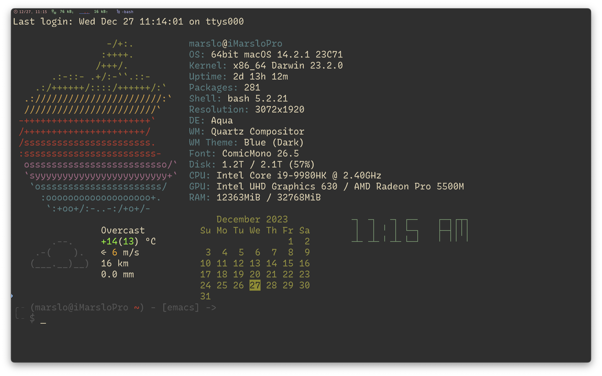

prompt
linux/osx
-
#!/usr/bin/env bash # NAME : now # PATH : $HOME/bin # DESC : Display current weather, calendar and time # CALL : Called from terminal or ~/.bashrc # DATE : Apr 6, 2017. Modified: May 24, 2019. # CREDIT : https://askubuntu.com/a/1020693/92979 # UPDT : 2019-05-24 If Weather unavailable nicely formatted error message. # UPDT : 2024-01-26 fix the "today" position offset issue due to extra space in `cal` # NOTE : to display all available toilet fonts use this one-liner: # for i in ${TOILET_FONT_PATH:=/usr/share/figlet}/*.{t,f}lf; do j=${i##*/}; toilet -d "${i%/*}" -f "$j" "${j%.*}"; done # setup for 92 character wide terminal dateColumn=34 # default is 27 for 80 character line, 34 for 92 character line timeColumn=61 # default is 49 for " " " " 61 " " " " curlOpt='-skg -x http://proxy.sample.com:80' #------------------------------ WEATHER ------------------------------------- # current weather, already in color so no need to override # replace edmonton with your city name, gps, etc. see: curl wttr.in/:help # shellcheck disable=SC2086 if ! curl ${curlOpt} wttr.in/sanjose?QmM0 --fail --silent --max-time 3 > /tmp/now-weather; then # timeout #. increase for slow connection---^ ~/.marslo/bin/iweather > /tmp/now-weather fi # was valid weather report found or an error message? if grep '°C' /tmp/now-weather >/dev/null 2>&1; then weatherDone=true cat /tmp/now-weather else weatherDone=false dateColumn=1 # show data as first column if got weather failed timeColumn=27 # move 34 column right if got weather failed fi [[ -f /tmp/now-weather ]] && rm -rf /tmp/now-weather #------------------------------- DATA --------------------------------------- # calendar current month with today highlighted. # colors 00=bright white, 31=red, 32=green, 33=yellow, 34=blue, 35=purple, 36=cyan, 37=white tput sc # save cursor position. if [[ "$weatherDone" == true ]] ; then tput cuu 6 # move up 6 lines # depending on length of your city name and country name you will: # 1. comment out next three lines of code. uncomment fourth code line. # 2. change subtraction value and set number of print spaces to match # subtraction value. then place comment on fourth code line. column=$((dateColumn - 10)) tput cuf $column # move x column number printf '%10s' '' # blank out ", country" with 10 spaces else tput cuf $dateColumn # position to column 27 for date display fi # -h needed to turn off formatting: https://askubuntu.com/questions/1013954/bash-substring-stringoffsetlength-error/1013960#1013960 # -h not supported in Ubuntu 18.04. Use second answer: https://askubuntu.com/a/1028566/307523 # to fit for both macOS and Linux # - linux: cal have 2 more extra whitespace in each line, 22 chars per line # - osx: cal has no more extra whitespace in each line, 20 chars per line # cal -h remove trailing spaces remove empty line # v v v cal | tr -cd '\11\12\15\40\60-\136\140-\176' | sed 's/[ \t]*$//' | sed '/^[[:space:]]*$/d' > /tmp/terminal calLineCnt=1 today=$(date +"%e") printf "\033[32m" # color green -- see list above. while IFS= read -r cal; do printf "%s" "$cal" if [[ $calLineCnt -gt 2 ]] ; then tput cub "$(awk '{print length($0)}' <<< "${cal}")" for (( j=0 ; j <= 18 ; j += 3 )) ; do # see if today is on current line & invert background day=${cal:$j:2} # current day on calendar line if [[ "$day" == "$today" ]] ; then printf "\033[7m" # reverse: [7m printf "%s" "$today" printf "\033[0m" # normal: [0m printf "\033[32m" # color green -- see list above. tput cuf 1 else tput cuf 3 fi done fi tput cud1 # move one line down tput cuf $dateColumn # move 27 columns right calLineCnt=$((++calLineCnt)) done < /tmp/terminal printf "\033[00m" # color -- bright white (default) tput rc # restore saved cursor position. #------------------------------- TIME --------------------------------------- tput sc # save cursor position. tput cuu 6 # move up 9 lines tput cuf $timeColumn # move 49 columns right if hash toilet 2>/dev/null; then # if has toilet date +"%I:%M %P" | toilet -f future > /tmp/terminal elif hash figlet 2>/dev/null; then # if has figlet date +"%I:%M %P" | figlet -f /usr/local/share/figlet/future.tlf > /tmp/terminal else date +"%I:%M %P" > /tmp/terminal fi while IFS= read -r time; do printf "\033[01;36m" # color cyan printf "%s" "$time" tput cud1 # up one line tput cuf $timeColumn # move 49 columns right done < /tmp/terminal [[ -f /tmp/terminal ]] && rm -rf /tmp/terminal tput rc # restore saved cursor position. exit 0 # vim:tabstop=2:softtabstop=2:shiftwidth=2:expandtab:filetype=sh -
# NAME: now # PATH: $HOME/bin # DESC: Display current weather, calendar and time # CALL: Called from terminal or ~/.bashrc # DATE: Apr 6, 2017. Modified: Mar 30, 2018. # NOTE: To display all available toilet fonts use this one-liner: # for i in ${TOILET_FONT_PATH:=/usr/share/figlet}/*.{t,f}lf; do j=${i##*/}; toilet -d "${i%/*}" -f "$j" "${j%.*}"; done # Setup for 92 character wide terminal DateColumn=34 # Default is 27 for 80 character line, 34 for 92 character line TimeColumn=61 # Default is 49 for " " " " 61 " " " " #--------- WEATHER ---------------------------------------------------------- # Current weather, already in color so no need to override echo " " # Replace Edmonton with your city name, GPS, etc. See: curl wttr.in/:help curl wttr.in/Edmonton?0 --silent --max-time 3 # Timeout #. Increase for slow connection---^ echo " " echo " " # Pad with blank lines for calendar & time to fit #--------- DATE ------------------------------------------------------------- # calendar current month with today highlighted. # colors 00=bright white, 31=red, 32=green, 33=yellow, 34=blue, 35=purple, # 36=cyan, 37=white tput sc # Save cursor position. # Move up 9 lines while [ $((++i)) -lt 10 ]; do tput cuu1; done # Depending on length of your city name and country name you will: # 1. Comment out next three lines of code. Uncomment fourth code line. # 2. Change subtraction value and set number of print spaces to match # subtraction value. Then place comment on fourth code line. Column=$(($DateColumn - 10)) tput cuf $Column # Move x column number printf " " # Blank out ", country" with x spaces #tput cuf $DateColumn # Position to column 27 for date display # -h needed to turn off formating: https://askubuntu.com/questions/1013954/bash-substring-stringoffsetlength-error/1013960#1013960 cal -h > /tmp/terminal CalLineCnt=1 Today=$(date +"%d") # Prefix with space when length < 2 if [[ ${#Today} < 2 ]] ; then Today=" "$Today fi printf "\033[32m" # color green -- see list above. while IFS= read -r Cal; do printf "$Cal" if [[ $CalLineCnt > 2 ]] ; then # See if today is on current line & invert background tput cub 22 for (( j=0 ; j <= 18 ; j += 3 )) ; do Test=${Cal:$j:2} # Current day on calendar line if [[ "$Test" == "$Today" ]] ; then printf "\033[7m" # Reverse: [ 7 m printf "$Today" printf "\033[0m" # Normal: [ 0 m printf "\033[32m" # color green -- see list above. tput cuf 1 else tput cuf 3 fi done fi tput cud1 # Down one line tput cuf $DateColumn # Move 27 columns right CalLineCnt=$((++CalLineCnt)) done < /tmp/terminal printf "\033[00m" # color -- bright white (default) echo "" tput rc # Restore saved cursor position. #-------- TIME -------------------------------------------------------------- tput sc # Save cursor position. # Move up 9 lines i=0 while [ $((++i)) -lt 10 ]; do tput cuu1; done tput cuf $TimeColumn # Move 49 columns right # Do we have the toilet package? if hash toilet 2>/dev/null; then echo " "$(date +"%I:%M %P")" " | \ toilet -f future --filter border > /tmp/terminal # Do we have the figlet package? elif hash figlet 2>/dev/null; then echo $(date +"%I:%M %P") | figlet > /tmp/terminal # else use standard font else echo $(date +"%I:%M %P") > /tmp/terminal fi while IFS= read -r Time; do printf "\033[01;36m" # color cyan printf "$Time" tput cud1 # Up one line tput cuf $TimeColumn # Move 49 columns right done < /tmp/terminal tput rc # Restore saved cursor position. exit 0 1.2.6.1 -- screenfetch and now
windows
- nijikokun/WinScreeny
-
#!/usr/bin/env bash # # Windows Screenfetch (Without the Screenshot functionality) # Hacked together by Nijikokun <nijikokun@gmail.com> # License: AOL <aol.nexua.org> # Downloaded from: https://github.com/nijikokun/WinScreeny # Modified from Windows to Windows Subsystem for Linux (Ubuntu initially) version='0.4' # Displayment display=( Host Cpu OS Arch Shell Motherboard HDD Memory Uptime Resolution DE WM WMTheme Font ) # Color Loop bld=$'\e[1m' rst=$'\e[0m' inv=$'\e[7m' und=$'\e[4m' f=3 b=4 for j in f b; do for i in {0..7}; do printf -v $j$i %b "\e[${!j}${i}m" done done # Debugging debug= Debug () { echo -e "\e[1;31m:: \e[0m$1" } # Flag Check while getopts "vVh" flags; do case $flags in h) echo -e "${und}Usage${rst}:" echo -e " screeny [Optional Flags]" echo "" echo "WinScreeny - A CLI Bash Script to show System Information for Windows!" echo "" echo -e "${und}Options${rst}:" echo -e " ${bld}-v${rst} Verbose / Debug Output" echo -e " ${bld}-V${rst} Display script version" echo -e " ${bld}-h${rst} Display this file" exit;; V) echo -e "${und}WinScreeny${rst} - Version ${version}" echo -e "Copyright (C) Nijiko Yonskai (nijikokun@gmail.com)" echo "" echo -e "This is free software, under the AOL license: http://aol.nexua.org" echo -e "Source can be downloaded from: https://github.com/Nijikokun/WinScreeny" exit;; v) debug=1 continue;; esac done # Prevent Unix Output unameOutput=`uname`GARBAGE if [[ "$unameOutput" == 'Linux' ]] || [[ "$unameOutput" == 'Darwin' ]] ; then echo 'This script is for Windows, silly!' exit 0 fi # Begin Detection detectHost () { user=$(echo "$USER") host=$(hostname) [[ "$debug" -eq "1" ]] && Debug "Finding hostname, and user.... Found as: '$user@$host'" } detectCpu () { cpu=$(awk -F':' '/model name/{ print $2 }' /proc/cpuinfo | head -n 1 | tr -s " " | sed 's/^ //') [[ "$debug" -eq "1" ]] && Debug "Finding cpu.... Found as: '$cpu'" } detectOS () { os=`uname -r` } detectArch () { arch=`lsb_release -a 2>&1 | awk '{ print $2 " " $3 " " $4}' | head -3 | tail -1` [[ "$debug" -eq "1" ]] && Debug "Finding Architecture.... Found as: '$arch'" } detectHDD () { size=`df -H | awk '{ print $2}' | head -2 | tail -1 | tr -d '\r '` free=`df -H | awk '{ print $4 }' | head -2 | tail -1 | tr -d '\r '` } detectResolution () { width=`/mnt/c/Windows/System32/wbem/WMIC.exe desktopmonitor get screenwidth | grep -vE '[a-z]+' | tr -d '\r\n '` height=`/mnt/c/Windows/System32/wbem/WMIC.exe desktopmonitor get screenheight | grep -vE '[a-z]+' | tr -d '\r\n '` } detectUptime () { uptime=`awk -F. '{print $1}' /proc/uptime` secs=$((${uptime}%60)) mins=$((${uptime}/60%60)) hours=$((${uptime}/3600%24)) days=$((${uptime}/86400)) uptime="${mins}m" if [ "${hours}" -ne "0" ]; then uptime="${hours}h ${uptime}" fi if [ "${days}" -ne "0" ]; then uptime="${days}d ${uptime}" fi [[ "$debug" -eq "1" ]] && Debug "Finding Uptime.... Found as: '$uptime${rst}'" } detectMemory () { total_mem=$(awk '/MemTotal/ { print $2 }' /proc/meminfo) totalmem=$((${total_mem}/1024)) free_mem=$(awk '/MemFree/ { print $2 }' /proc/meminfo) used_mem=$((${total_mem} - ${free_mem})) usedmem=$((${used_mem}/1024)) mem="${usedmem}MB / ${totalmem}MB" [[ "$debug" -eq "1" ]] && Debug "Finding Memory.... Found as: '$mem${rst}'" } detectShell () { myshell=`bash --version | head -1` [[ "$debug" -eq "1" ]] && Debug "Finding Shell.... Found as: '$myshell'" } detectMotherboard () { board=`/mnt/c/Windows/System32/wbem/WMIC.exe baseboard get product | tail -2 | tr -d '\r '` } detectDE () { winver=`/mnt/c/Windows/System32/wbem/WMIC.exe os get version | grep -o '^[0-9]'` if [ "$winver" == "7" ]; then de='Aero' elif [ "$winver" == "6" ]; then de='Aero' else de=$winver fi [[ "$debug" -eq "1" ]] && Debug "Finding Desktop Environment.... Found as: '$de'" } detectWM () { vcxsrv=`/mnt/c/Windows/System32/tasklist.exe | grep -o 'vcxsrv' | tr -d '\r \n'` wind=`/mnt/c/Windows/System32/tasklist.exe | grep -o 'Windawesome' | tr -d '\r \n'` if [ "$vcxsrv" = "vcxsrv" ]; then wm="VcXsrv" elif [ "$wind" = "Windawesome" ]; then wm="Windawesome" else wm="DWM" fi [[ "$debug" -eq "1" ]] && Debug "Finding Window Manager.... Found as: '$wm'" } detectWMTheme () { themeFile="$(/mnt/c/Windows/System32/reg.exe query 'HKCU\Software\Microsoft\Windows\CurrentVersion\Themes' /v 'CurrentTheme' | grep -o '[A-Z]:\\.*')" # theme=$(echo $themeFile | awk -F"\\" '{print $NF}' | grep -o '[0-9A-z. ]*$' | grep -o '^[0-9A-z ]*') theme=$themeFile [[ "$debug" -eq "1" ]] && Debug "Finding Window Theme.... Found as: '$theme'" } detectFont () { # font=$(cat $HOME/.minttyrc | grep '^Font=.*' | grep -o '[0-9A-Za-z ]*$') font="Consolas" [[ "$debug" -eq "1" ]] && Debug "Finding Font.... Found as: '$font'" # if [ -z $font ]; then # font="Lucida Console" # fi } # Loops :> for i in "${display[@]}"; do [[ "${display[*]}" =~ "$i" ]] && detect${i} done # Output cat << EOF $f1 ,.=:^!^!t3Z3z., $f1 :tt:::tt333EE3 ${f6}${user}${f7}@${f6}${host} $f1 Et:::ztt33EEE $f2@Ee., .., $f1 ;tt:::tt333EE7 $f2;EEEEEEttttt33# ${f6}OS: ${f7}${os} ${arch} $f1 :Et:::zt333EEQ.$f2 SEEEEEttttt33QL ${f6}CPU: ${f7}${cpu} $f1 it::::tt333EEF $f2@EEEEEEttttt33F ${f6}HDD free / size: ${f7}$free / $size $f1 ;3=*^\`\`\`'*4EEV $f2:EEEEEEttttt33@. ${f6}Memory used / size: ${f7}${mem} $f4 ,.=::::it=., $f1\` $f2@EEEEEEtttz33QF ${f6}Uptime: ${f7}$uptime $f4 ;::::::::zt33) $f2'4EEEtttji3P* ${f6}Resolution: ${f7}$width x $height $f4 :t::::::::tt33.$f3:Z3z.. $f2\`\` $f3,..g. ${f6}Motherboard: ${f7}$board $f4 i::::::::zt33F$f3 AEEEtttt::::ztF ${f6}Shell: ${f7}$myshell $f4 ;:::::::::t33V $f3;EEEttttt::::t3 ${f6}DE: ${f7}$de $f4 E::::::::zt33L $f3@EEEtttt::::z3F ${f6}WM: ${f7}$wm $f4 {3=*^\`\`\`'*4E3) $f3;EEEtttt:::::tZ\` ${f6}WM Theme: ${f7}$theme $f4 \` $f3:EEEEtttt::::z7 ${f6}Font: ${f7}$font $f3 $f3'VEzjt:;;z>*\` $rst EOF
weather
- wttr.in
-
- One Call API 3.0
lat & lon
$ curl -g "https://api.openweathermap.org/geo/1.0/direct?q=San%20Jose&limit=5&appid=<api-key>" # i.e. Santa Clara City $ /usr/bin/curl -sg "https://api.openweathermap.org/geo/1.0/direct?q=Santa%20Clara&limit=5&appid=<api-key>" | jq -r '.[] | select(.state == "California") | (.lat|tostring) + " : " + (.lon|tostring)' 37.3541132 : -121.955174weather
$ /usr/bin/curl -sg "https://api.openweathermap.org/data/3.0/onecall?lat=37.3541132&lon=-121.955174&units=metric&appid=<api-key>" | jq -r .current { "dt": 1691720508, # date -d @<secs> "sunrise": 1691673584, # date -d @<secs> "sunset": 1691723206, # date -d @<secs> "temp": 24.13, # °C : units=metric "feels_like": 24.17, # °C : units=metric "pressure": 1013, "humidity": 60, "dew_point": 15.88, # °C : units=metric "uvi": 0.26, "clouds": 40, # % "visibility": 10000, # m == 10.0km "wind_speed": 8.75, # m/s "wind_deg": 350, "weather": [ { "id": 802, "main": "Clouds", "description": "scattered clouds", "icon": "03d" } ] } # unscramble # date: $ TZ=America/Los_Angeles date -d @1691720508 Thu Aug 10 19:21:48 PDT 2023 $ TZ=America/Los_Angeles date -d @1691673584 Thu Aug 10 06:19:44 PDT 2023 $ TZ=America/Los_Angeles date -d @1691723206 Thu Aug 10 20:06:46 PDT 2023
iweather
#!/usr/bin/env bash
# shellcheck disable=SC2034,SC1111,SC1110
# ===========================================================================
# FileName : iweather
# Author : marslo
# Created : 2023-08-11 03:05:27
# LastChange : 2023-08-12 00:55:09
# ===========================================================================
shopt -s extglob
# https://github.com/ppo/bash-colors
# shellcheck disable=SC2154,SC1091
source "${iRCHOME}"/bin/bash-color.sh
function die() { echo -e "$(c R)~~> ERROR$(c) : $*" >&2; exit 2; }
function showHelp() { echo -e "${usage}"; exit 0; }
function capitalized() {
result=''
for _i in "$@"; do result+=${_i^}; result+=' '; done
echo "${result}"
}
function windDirection() {
direction=$1
if (( $(echo "0 < ${direction}" | bc -l) && $(echo "${direction} <= 22.5" | bc -l) )); then
echo '→'
elif (( $(echo "22.5 < ${direction}" | bc -l) && $(echo "${direction} <= 67.5" | bc -l) )); then
echo '↗'
elif (( $(echo "67.5 < ${direction}" | bc -l) && $(echo "${direction} <= 112.5" | bc -l) )); then
echo '↑'
elif (( $(echo "112.5 < ${direction}" | bc -l) && $(echo "${direction} <= 157.5" | bc -l) )); then
echo '↖'
elif (( $(echo "157.5 < ${direction}" | bc -l) && $(echo "${direction} <= 202.5" | bc -l) )); then
echo '←'
elif (( $(echo "202.5 < ${direction}" | bc -l) && $(echo "${direction} <= 247.5" | bc -l) )); then
echo '↙'
elif (( $(echo "247.5 < ${direction}" | bc -l) && $(echo "${direction} <= 292.5" | bc -l) )); then
echo '↓'
elif (( $(echo "292.5 < ${direction}" | bc -l) && $(echo "${direction} <= 337.5" | bc -l) )); then
echo '↘'
elif (( $(echo "337.5 < ${direction}" | bc -l) && $(echo "${direction} <= 360" | bc -l) )); then
echo '→'
fi
}
function getLatLon() {
ccity=$(echo "$*" | xargs | sed 's/ /%20/g')
# ${CURL} -skg "${API_HOME}?q=${ccity,,}&appid=${OWM_API_TOKEN}&limit=5" | jq -r '.[] | select(.state == "California") | .lat ...'
${CURL} -skg "${API_HOME}/geo/1.0/direct?q=${ccity,,}&limit=1&appid=${appid}" | jq -r '.[] | "lat=" + (.lat|tostring) + "&lon=" + (.lon|tostring)' > "${locFile}"
if [[ ! -s ${locFile} ]] || [[ ! -f "${locFile}" ]]; then
echo '-1'
else
cat "${locFile}"
fi
}
function getWeatherData() {
param="$*"
loc=$(getLatLon "$param")
[[ '-1' = "${loc}" ]] && die "city '$(c Y)${param}$(c)' cannot be found ! manual check the valid name from https://openweathermap.org/ !"
units='metric'
exclude='hourly,daily,minutely,alerts'
# shellcheck disable=SC1111,SC1110,SC2086
${CURL} -skg "${API_HOME}/data/3.0/onecall?${loc}&units=${units}&exclude=${exclude}&appid=${appid}" \
| jq -r .current > ${tempfile}
}
# shellcheck disable=SC2086,SC1091
source "$(dirname $0)/iweather.icon"
API_HOME="https://api.openweathermap.org"
CURL='/usr/local/opt/curl/bin/curl'
tempfile='/tmp/open-weather-map.json'
locFile='/tmp/omw-lat-lon'
cname='San Jose'
verbose='false'
appid="${OWM_API_TOKEN}"
# shellcheck disable=SC1078,SC1079
usage="""
$(c M)iweather$(c) - show weather status of city
\nNOTICE:
\n\t1. requires https://openweathermap.org/api API key first! and setup environment variable:
\t $(c Y)\$ export OWM_API_TOKEN=xxxxx$(c)
\t2. copy or move $(c G)iweather.icon$(c) into same directory with current script
\t $(c Y)\$ cp mylinux/config/home/.marslo/bin/iweather.icon .$(c)
\t $(c sW)# or$(c)
\t $(c Y)\$ curl -o iweather.icon https://raw.githubusercontent.com/marslo/mylinux/master/confs/home/.marslo/bin/iweather.icon$(c)
\nSYNOPSIS:
\n\t$(c sY)\$ iweather [ -h | -v | -c <city> ]$(c)
\nEXAMPLE:
\n\tshow help
\t $(c G)\$ iweather -h$(c)
\n\tto show current weather stats
\t $(c G)\$ iweather <city name>$(c) | $(c G)iweather -c <city name>$(c)
USAGE:
\n\t $ iweather -v
\t $(c G)Santa Clara$(c) : Few Clouds
\t
\t \033[38;5;226m \\ /\033[0m \033[38;5;214m17.36\033[0m °C
\t \033[38;5;226m _ /""\033[38;5;250m.-. \033[0m → \033[38;5;220m3.6\033[0m m/s
\t \033[38;5;226m \\_\033[38;5;250m( ). \033[0m 10.00 km
\t \033[38;5;226m /\033[38;5;250m(___(__) \033[0m 80 %
\t 0 mW/cm2
\n\t $ iweather -c beijing -v
\t $(c G)Beijing$(c) : Clear Sky
\t
\t\033[38;5;226m \\ / \033[0m \033[38;5;214m31.94\033[0m °C
\t\033[38;5;226m .-. \033[0m ↑ \033[38;5;220m2.05\033[0m m/s
\t\033[38;5;226m ― ( ) ― \033[0m 10.00 km
\t\033[38;5;226m \`-’ \033[0m 57 %
\t\033[38;5;226m / \\ \033[0m 4.6 mW/cm2
"""
if [[ 0 -eq $# ]]; then
# shellcheck disable=SC2269
cname="${cname}"
# simple usage: not starts with '-' && not contains '='
elif [[ 1 -eq $# ]] && [[ '-' != "${1::1}" ]] ; then
cname="$1"
else
# credit belongs to https://stackoverflow.com/a/28466267/519360
# shellcheck disable=SC2295
while getopts :hvc:-: OPT; do
if [ "$OPT" = "-" ]; then
OPT="${OPTARG%%=*}"
OPTARG="${OPTARG#$OPT}"
OPTARG="${OPTARG#=}"
fi
case "$OPT" in
h ) help='true' ;;
v ) verbose=true ;;
c ) cname="$OPTARG" ;;
??* ) die "Illegal option --$OPT" ;;
? ) die "Illegal option --$OPT" ;;
esac
done
[[ 1 -eq $OPTIND ]] && showHelp
fi
[[ 'true' = "${help}" ]] && showHelp
[[ -z "${OWM_API_TOKEN}" ]] && die "setup environment variable '$(c M)OWM_API_TOKEN$(c)' first! check details via $(c Y)$ iweather -h$(c)."
[[ -z "${sunny}" ]] && die "setup $(c G)weather.icon$(c) first!"
getWeatherData "${cname}"
weatherIcon="$(jq -r .weather[].icon < ${tempfile})"
description="$(jq -r .weather[].description < ${tempfile})"
temperature="$(jq -r .temp < ${tempfile})"
windSpeed="$(jq -r .wind_speed < ${tempfile})"
windDeg=$(jq -r .wind_deg < ${tempfile})
humidity=$(jq -r .humidity < ${tempfile})
visibility="""$(bc <<< "scale=2; $(jq -r .visibility < ${tempfile})/1000")"""
uvi="""$(bc <<< "scale=1; $(jq -r .uvi < ${tempfile})/1")"""
# workaround for : E: Numbers with leading 0 are considered octal
# Weather icons: https://openweathermap.org/weather-conditions
declare -A codeMap=(
['x01']="sunny"
['x02']="fewClouds"
['x03']="scatteredClouds"
['x04']="brokenClouds"
['x09']="showerRain"
['x10']="rain"
['x11']="thunderStorm"
['x13']="snow"
['x50']="mist"
)
# shellcheck disable=SC2086
declare -A descMap=(
['01_temperature']="\033[38;5;214m${temperature}\033[0m °C"
['02_windSpeed']="$(windDirection "${windDeg}") \033[38;5;220m${windSpeed}\033[0m m/s"
['03_visibility']="${visibility} km"
['04_humidity']="${humidity} %"
['05_uvi']="${uvi} mW/cm2"
)
# shellcheck disable=SC2086
[[ 'true' = "${verbose}" ]] && echo -e " $(c G)$(capitalized ${cname})$(c): $(capitalized ${description})"
echo -e "${!codeMap["x${weatherIcon:0:-1}"]}"
tput sc
tput cuu 6
for k in "${!descMap[@]}"; do echo "${k}"; done | sort -h | while read -r _d; do
tput cuf 15
echo -e "${descMap[${_d}]}"
done
tput rc
rm -rf "${tempfile}" "${locFile}"
# vim:tabstop=2:softtabstop=2:shiftwidth=2:expandtab:filetype=sh
## more for weather icons: https://erikflowers.github.io/weather-icons/
sunny='''
\033[38;5;226m \\ / \033[0m
\033[38;5;226m .-. \033[0m
\033[38;5;226m ― ( ) ― \033[0m
\033[38;5;226m `-’ \033[0m
\033[38;5;226m / \\ \033[0m
'''
fewClouds='''
\033[38;5;226m \\ /\033[0m
\033[38;5;226m _ /""\033[38;5;250m.-. \033[0m
\033[38;5;226m \\_\033[38;5;250m( ). \033[0m
\033[38;5;226m /\033[38;5;250m(___(__) \033[0m
'''
scatteredClouds='''
\033[38;5;250m .--. \033[0m
\033[38;5;250m .-( ). \033[0m
\033[38;5;250m (___.__)__) \033[0m
'''
brokenClouds='''
\033[38;5;240;1m .--. \033[0m
\033[38;5;240;1m .-( ). \033[0m
\033[38;5;240;1m (___.__)__) \033[0m
'''
lightShowers='''
\033[38;5;226m _`/""\033[38;5;250m.-. \033[0m
\033[38;5;226m ,\\_\033[38;5;250m( ). \033[0m
\033[38;5;226m /\033[38;5;250m(___(__) \033[0m
\033[38;5;111m ‘ ‘ ‘ ‘ \033[0m
\033[38;5;111m ‘ ‘ ‘ ‘ \033[0m
'''
heavyShowers='''
\033[38;5;226m _`/""\033[38;5;240;1m.-. \033[0m
\033[38;5;226m ,\\_\033[38;5;240;1m( ). \033[0m
\033[38;5;226m /\033[38;5;240;1m(___(__) \033[0m
\033[38;5;21;1m ‚‘‚‘‚‘‚‘ \033[0m
\033[38;5;21;1m ‚’‚’‚’‚’ \033[0m
'''
lightSnowShowers='''
\033[38;5;226m _`/""\033[38;5;250m.-. \033[0m
\033[38;5;226m ,\\_\033[38;5;250m( ). \033[0m
\033[38;5;226m /\033[38;5;250m(___(__) \033[0m
\033[38;5;255m * * * \033[0m
\033[38;5;255m * * * \033[0m
'''
heavySnowShowers='''
\033[38;5;226m _`/""\033[38;5;240;1m.-. \033[0m
\033[38;5;226m ,\\_\033[38;5;240;1m( ). \033[0m
\033[38;5;226m /\033[38;5;240;1m(___(__) \033[0m
\033[38;5;255;1m * * * * \033[0m
\033[38;5;255;1m * * * * \033[0m
'''
lightSleetShowers='''
\033[38;5;226m _`/""\033[38;5;250m.-. \033[0m
\033[38;5;226m ,\\_\033[38;5;250m( ). \033[0m
\033[38;5;226m /\033[38;5;250m(___(__) \033[0m
\033[38;5;111m ‘ \033[38;5;255m*\033[38;5;111m ‘ \033[38;5;255m* \033[0m
\033[38;5;255m *\033[38;5;111m ‘ \033[38;5;255m*\033[38;5;111m ‘ \033[0m
'''
showerRain='''
\033[38;5;226m _`/""\033[38;5;250m.-. \033[0m
\033[38;5;226m ,\\_\033[38;5;250m( ). \033[0m
\033[38;5;226m /\033[38;5;250m(___(__) \033[0m
\033[38;5;228;5m ⚡\033[38;5;111;25m‘ ‘\033[38;5;228;5m⚡\033[38;5;111;25m‘ ‘ \033[0m
\033[38;5;111m ‘ ‘ ‘ ‘ \033[0m
'''
thunderStorm='''
\033[38;5;240;1m .-. \033[0m
\033[38;5;240;1m ( ). \033[0m
\033[38;5;240;1m (___(__) \033[0m
\033[38;5;21;1m ‚‘\033[38;5;228;5m⚡\033[38;5;21;25m‘‚\033[38;5;228;5m⚡\033[38;5;21;25m‚‘ \033[0m
\033[38;5;21;1m ‚’‚’\033[38;5;228;5m⚡\033[38;5;21;25m’‚’ \033[0m
'''
thunderySnowShowers='''
\033[38;5;226m _`/""\033[38;5;250m.-. \033[0m
\033[38;5;226m ,\\_\033[38;5;250m( ). \033[0m
\033[38;5;226m /\033[38;5;250m(___(__) \033[0m
\033[38;5;255m *\033[38;5;228;5m⚡\033[38;5;255;25m*\033[38;5;228;5m⚡\033[38;5;255;25m* \033[0m
\033[38;5;255m * * * \033[0m
'''
rain='''
\033[38;5;250m .-. \033[0m
\033[38;5;250m ( ). \033[0m
\033[38;5;250m (___(__) \033[0m
\033[38;5;111m ‘ ‘ ‘ ‘ \033[0m
\033[38;5;111m ‘ ‘ ‘ ‘ \033[0m
'''
heavyRain='''
\033[38;5;240;1m .-. \033[0m
\033[38;5;240;1m ( ). \033[0m
\033[38;5;240;1m (___(__) \033[0m
\033[38;5;21;1m ‚‘‚‘‚‘‚‘ \033[0m
\033[38;5;21;1m ‚’‚’‚’‚’ \033[0m
'''
snow='''
\033[38;5;250m .-. \033[0m
\033[38;5;250m ( ). \033[0m
\033[38;5;250m (___(__) \033[0m
\033[38;5;255m * * * \033[0m
\033[38;5;255m * * * \033[0m
'''
heavySnow='''
\033[38;5;240;1m .-. \033[0m
\033[38;5;240;1m ( ). \033[0m
\033[38;5;240;1m (___(__) \033[0m
\033[38;5;255;1m * * * * \033[0m
\033[38;5;255;1m * * * * \033[0m
'''
lightSleet='''
\033[38;5;250m .-. \033[0m
\033[38;5;250m ( ). \033[0m
\033[38;5;250m (___(__) \033[0m
\033[38;5;111m ‘ \033[38;5;255m*\033[38;5;111m ‘ \033[38;5;255m* \033[0m
\033[38;5;255m *\033[38;5;111m ‘ \033[38;5;255m*\033[38;5;111m ‘ \033[0m
'''
mist='''
\033[38;5;251m _ - _ - _ - \033[0m
\033[38;5;251m _ - _ - _ \033[0m
\033[38;5;251m _ - _ - _ - \033[0m
'''
-
#------------------------------ WEATHER ------------------------------------- if ! curl ${curlOpt} wttr.in/sanjose?QmM0 --fail --silent --max-time 3 > /tmp/now-weather; then # timeout #. increase for slow connection---^ ~/.marslo/bin/iweather > /tmp/now-weather fi # was valid weather report found or an error message? if grep '°C' /tmp/now-weather >/dev/null 2>&1; then WeatherSuccess=true cat /tmp/now-weather else WeatherSuccess=false echo " " echo " " echo " " echo " " echo " " # replace edmonton with your city echo " " echo " " echo " " fi echo " " # pad blank lines for calendar & time to fit rm -rf /tmp/now-weather
uriel1998/weather.sh
szantaii/bash-weather
widget
brndnmtthws/conky
others
[!NOTE]
figlet
[!NOTE|label:references:]
list all fonts
$ while read -r _font; do echo -e "\n\n>> ${_font}"; date +"%I:%M %P" | figlet -w 300 -f ${_font} -d /usr/local/share/figlet; done < <(fd . /usr/local/share/figlet --follow -e tlf -e flf --color never)result
>> /usr/local/share/figlet/smblock.tlf ▗▌ ▞▀▖ ▗▌ ▛▀▌ ▌ ▗▘▐▌ ▌ ▐ ▛▀▖▛▚▀▖ ▌ ▗▘ ▗▖ ▌ ▌ ▙▄▘▌▐ ▌ ▝▀ ▀▀▘▝▘▝▀ ▘ ▌ ▘▝ ▘ >> /usr/local/share/figlet/smbraille.tlf ⢺ ⠊⡱ ⢺ ⠉⡹ ⣀⡀ ⣀⣀ ⠼⠄ ⠮⠤: ⠼⠄ ⠸ ⡧⠜ ⠇⠇⠇ >> /usr/local/share/figlet/future.tlf ╺┓ ┏━┓ ╺┓ ┏━┓ ┏━┓┏┳┓ ┃ ┏━┛╹ ┃ ┃ ┣━┛┃┃┃ ╺┻╸┗━╸╹╺┻╸ ╹ ╹ ╹ ╹ >> /usr/local/share/figlet/fonts/straight.flf __ ___ /| _). /| / _ _ | /__. | / |_)||| | $ realpath /usr/local/share/figlet/fonts/straight.flf /usr/local/Cellar/figlet/2.2.5/share/figlet/fonts/straight.flf $ realpath /usr/local/share/figlet/future.tlf /usr/local/Cellar/toilet/0.3/share/figlet/future.tlf $ realpath /usr/local/share/figlet/smbraille.tlf /usr/local/Cellar/toilet/0.3/share/figlet/smbraille.tlf $ realpath /usr/local/share/figlet/smblock.tlf /usr/local/Cellar/toilet/0.3/share/figlet/smblock.tlfothers
$ while read -r _font; do echo -e "\n>> ${_font}:"; figlet -w 200 -f "${_font}" 'fzf bat'; done < <( echo 'rectangles ogre graffiti cricket chunky rounded slant smslant starwars stop doom big small' | fmt -1 ) >> rectangles: ___ ___ _ _ | _|___| _| | |_ ___| |_ | _|- _| _| | . | .'| _| |_| |___|_| |___|__,|_| >> ogre: __ __ _ _ / _|___/ _| | |__ __ _| |_ | ||_ / |_ | '_ \ / _` | __| | _/ /| _| | |_) | (_| | |_ |_|/___|_| |_.__/ \__,_|\__| >> graffiti: _____ _____ ___. __ _/ ____\________/ ____\ \_ |__ _____ _/ |_ \ __\\___ /\ __\ | __ \\__ \\ __\ | | / / | | | \_\ \/ __ \| | |__| /_____ \ |__| |___ (____ /__| \/ \/ \/ >> cricket: ___ ___ __ __ .' _.-----.' _| | |--.---.-| |_ | _|-- __| _| | _ | _ | _| |__| |_____|__| |_____|___._|____| >> chunky: ___ ___ __ __ .' _|.-----.' _| | |--.---.-.| |_ | _||-- __| _| | _ | _ || _| |__| |_____|__| |_____|___._||____| >> rounded: ___ ___ _ / __) / __) | | _ _| |__ _____ _| |__ | |__ _____ _| |_ (_ __|___ |_ __) | _ \(____ (_ _) | | / __/ | | | |_) ) ___ | | |_ |_| (_____) |_| |____/\_____| \__) >> slant: ____ ____ __ __ / __/___ / __/ / /_ ____ _/ /_ / /_/_ / / /_ / __ \/ __ `/ __/ / __/ / /_/ __/ / /_/ / /_/ / /_ /_/ /___/_/ /_.___/\__,_/\__/ >> smslant: ___ ___ __ __ / _/__ / _/ / / ___ _/ /_ / _/_ // _/ / _ \/ _ `/ __/ /_/ /__/_/ /_.__/\_,_/\__/ >> starwars: _______ ________ _______ .______ ___ .___________. | ____|| / | ____| | _ \ / \ | | | |__ `---/ / | |__ | |_) | / ^ \ `---| |----` | __| / / | __| | _ < / /_\ \ | | | | / /----.| | | |_) | / _____ \ | | |__| /________||__| |______/ /__/ \__\ |__| >> stop: ___ ___ _ / __) / __) | | _ | |__ _____| |__ | | _ ____| |_ | __|___ ) __) | || \ / _ | _) | | / __/| | | |_) | ( | | |__ |_| (_____)_| |____/ \_||_|\___) >> doom: __ __ _ _ / _| / _| | | | | | |_ ___| |_ | |__ __ _| |_ | _|_ / _| | '_ \ / _` | __| | | / /| | | |_) | (_| | |_ |_| /___|_| |_.__/ \__,_|\__| >> big: __ __ _ _ / _| / _| | | | | | |_ ___| |_ | |__ __ _| |_ | _|_ / _| | '_ \ / _` | __| | | / /| | | |_) | (_| | |_ |_| /___|_| |_.__/ \__,_|\__| >> small: __ __ _ _ / _|___/ _| | |__ __ _| |_ | _|_ / _| | '_ \/ _` | _| |_| /__|_| |_.__/\__,_|\__|
toilet
fonts
$ ls $(brew --prefix toilet)/share/figlet ascii12.tlf bigascii9.tlf circle.tlf future.tlf mono9.tlf smascii9.tlf smmono12.tlf ascii9.tlf bigmono12.tlf emboss.tlf letter.tlf pagga.tlf smblock.tlf smmono9.tlf bigascii12.tlf bigmono9.tlf emboss2.tlf mono12.tlf smascii12.tlf smbraille.tlf wideterm.tlflist all fonts
$ while read -r _path; do _n=$(basename $_path); _fname=${_n//\.?lf/}; echo -e "\n\n>> ${_fname}"; date +"%I:%M %P" | toilet -f "${_fname}"; done < <(fd . $(brew --prefix toilet)/share/figlet --color never)